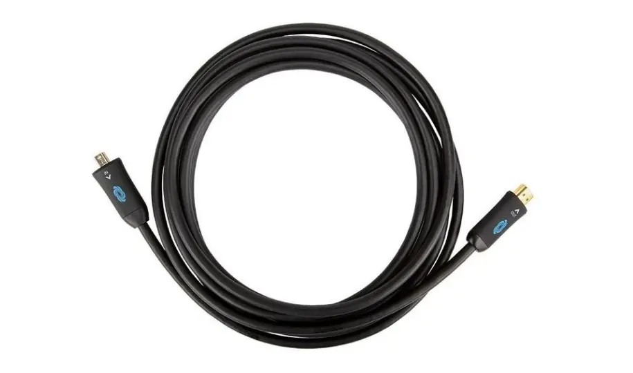

Кабельная продукция
Компания Crestron производит и поставляет кабели и разъемы для уверенной передачи сигналов различных стандартов. Линейка кабельной продукции Crestron включает огромный ассортимент кабелей для передачи аудио и видеосигналов для любых потребностей. Удобные износоустойчивые коннекторы обеспечивают плотную фиксацию провода, а сами кабели гарантируют надежную защиту сигнала от внешних воздействий и помех и пригодны для прокладки в кабель-каналах и подпотолочном пространстве как в помещении, так и вне его.